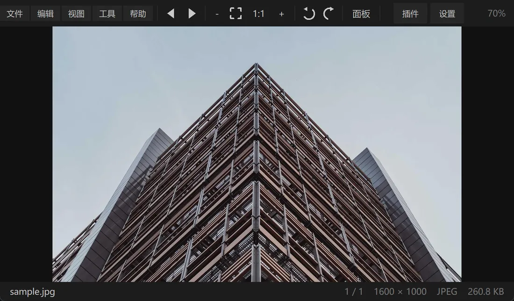
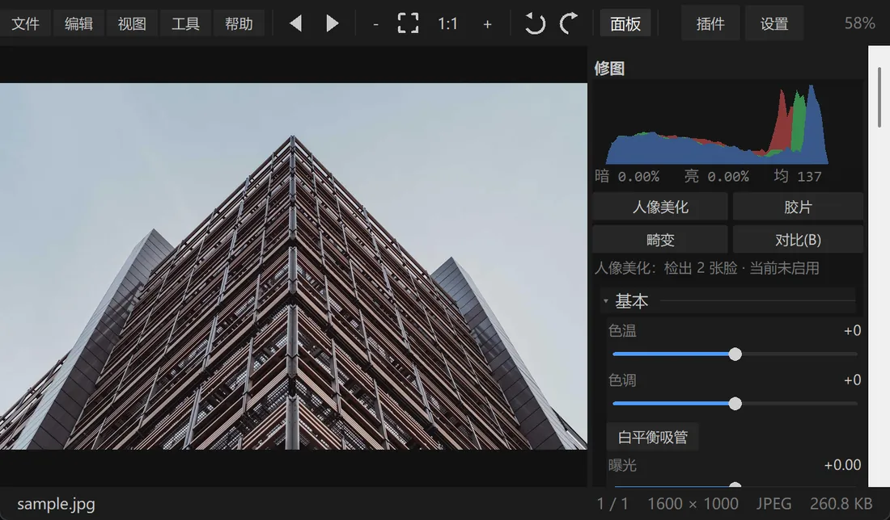
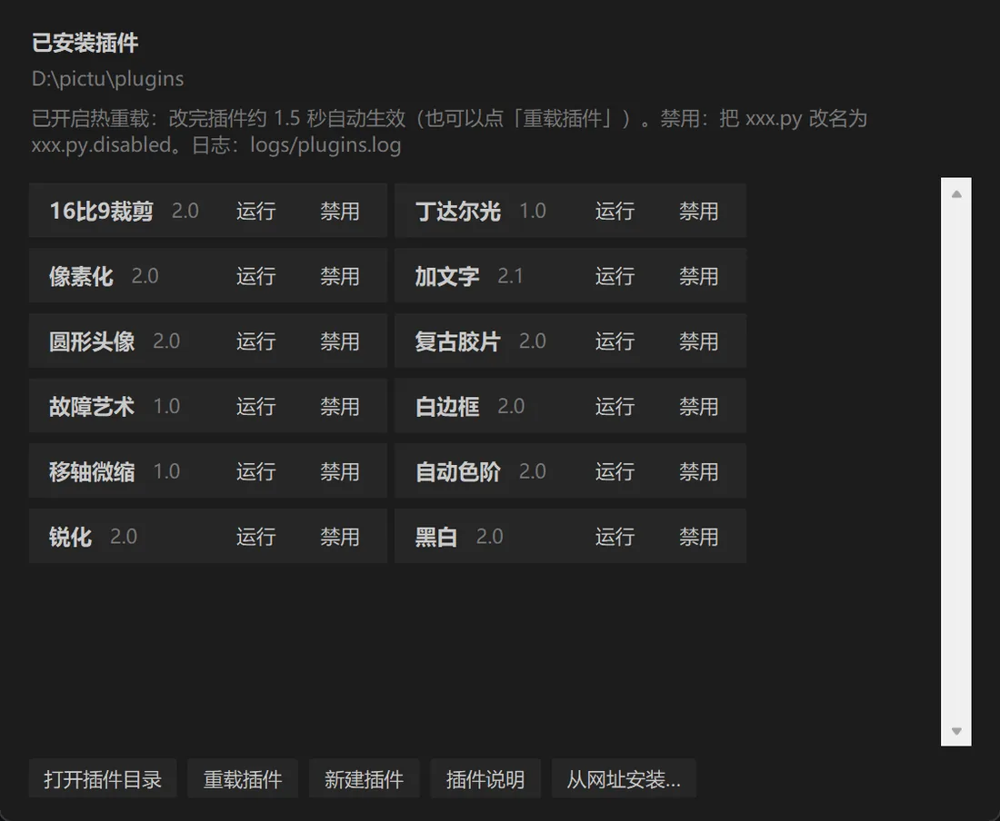
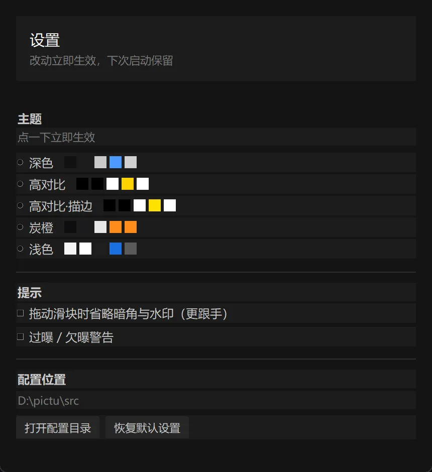
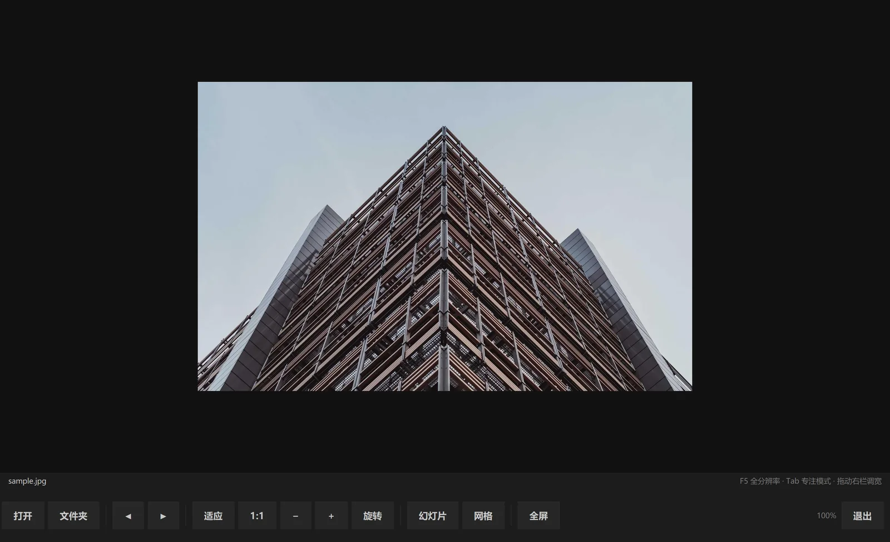

打开快、切图快、调色准。支持尼康 NEF 与常见格式，内置曲线、HSL 与局部滤镜，还可以用插件扩展。
全部下载 Windows 完整版40.1 MB Windows 看图版40.0 MB Windows 大屏版40.0 MB macOS227 KB Linux227 KB




以上三张是程序实际运行截图，由发版脚本自动生成（tools/uishot.py），不是设计稿。

 调色后
原始
调色后
原始
按住中间的圆点左右拖动，查看同一张原图套用曝光、对比度、自然饱和度、色温与暗角之后的效果。两张图都由 Prism 自己的渲染管线输出，不是后期拼的。
示例照片来自 Lorem Picsum（图源 Unsplash，免费使用），仅用于演示调色效果。


纯看图、无快捷键、工具栏在底部。所有操作都用大按钮完成，适合展厅、会议室、触摸大屏和长时间展示。

| 纯看图 | 没有修图面板、没有插件、没有调色功能 |
| 无快捷键 | 不绑定 F5 / Tab / Ctrl+O 等；所有操作点按钮 |
| 大按钮 | 底部工具栏，适合触摸与远距离操作 |
| 启动即最大化 | 全屏由底栏「全屏」按钮切换 |
| 安装器 | 与完整版相同的自解压 exe，可选安装或就地解压 |
大屏版已放进顶部「下载」菜单和下方下载区，与完整版、看图版排在一起：查看全部下载
| 秒开 | 按可见区域渲染，4000 万像素原图首帧不到一秒 |
| 专业调色 | 色调曲线、8 段 HSL、色调分离，预览与导出逐像素一致 |
| 镜头 / 胶片 / 人像 | 径向畸变矫正 · 胶片模拟 · 人像美化（纯算法，不依赖模型） |
| 局部调整 | 径向与渐变滤镜，另有主体与高对比自动选区 |
| 插件扩展 | 一个 .py 文件即插件，自带 12 个且都可调参，放进 plugins/ 目录就能用 |
| 默认应用 | 安装完成页「一键设为默认」一次登记全部支持格式；Windows 10 确认一次，Windows 11 直达应用页按格式确认；完整版/看图版/大屏版各自独立 |
| 10 套主题 + 描边 | 深色、浅色、高对比、炭橙、深海、森林、玫瑰、极夜、霓虹、暖纸；另有 2px 高对比描边开关，任何主题都能叠加，颜色跟随主题 |
| 动效与反馈 | 悬停渐变、按压回弹、点击涟漪与状态过渡可一键关闭；开关本身带缓动；关闭后立即响应、不做动画 |
| 右侧修图栏 | 六个分类标签（调整/颜色/细节/效果/预设/工具）；直方图与底栏固定，工具与历史独立分类，面板可拖宽 |
| 图片信息 | 文件 → 图片信息，或按 I；显示尺寸、格式、文件大小、路径与 EXIF，可复制 |
纯算法实现，不依赖模型文件、不联网、不上传照片。
9.15.10alpha 完成 50 轮迭代：自适应肤色蒙版、三段频率磨皮、面积过滤祛斑、对称眼位与瘦脸边界保护。
| 肤色柔化 | 三段频率磨皮：保留脸型光影，只压中频色块，毛孔细节回加 |
| 肤色提亮 / 均匀 | 亮度曲线提亮，高光自动减量；色度单独均匀 |
| 祛斑 / 痘印 | DoG 暗点 + Cr 红点，面积过滤后从肤色邻域修补 |
| 黑眼圈 | 眼位对称搜索；眼下只提亮暗部，正常肤色不跟着变白 |
| 牙齿 / 唇色 | 嘴部自适应红绿差阈值，牙齿与唇色分开处理 |
| 瘦脸 / 大眼 | 瘦脸从颧骨下方开始，肤色支撑蒙版避免背景跟着弯 |
| 素颜 | 全部归零 |
| 自然 | 磨皮 24 · 祛斑 20 · 牙齿 10 |
| 人像 | 磨皮 42 · 祛斑 40 · 眼周 28 · 瘦脸 8 |
| 网红 | 磨皮 65 · 祛斑 60 · 眼周 48 · 瘦脸 25 |
| 入口 | 调整分类 → 人像美化；或工具菜单 |
| 前后对比 | 按住 B 临时关闭美颜；松开恢复 |
| 状态行 | 面板顶部显示检出几张脸、当前参数、是否不适用 |
| 边界保护 | 局部蒙版保护背景；斑点不会修成亮斑；极小图 / 纯色 / 黑白 / 极端比例自动跳过 |
| 大图 | 12MP 全尺寸约 6.4 秒，预览只算可见区域 |
完整参数表与实现细节见 README 的「人像美化」章节。
插件就是一个 Python 文件。放进程序目录下的 plugins/ 文件夹，点「重新扫描」即可，不需要注册也不需要重启。
| 写一个插件 | 新增一个 .py，定义 run(img) 函数 |
| 拿到图片 | img 是已套用全部调整的 PIL.Image（RGB） |
| 返回结果 | 返回新的 PIL.Image 即可，返回 None 表示跳过 |
| 元信息 | PLUGIN_NAME / PLUGIN_DESC / PLUGIN_VERSION / PLUGIN_AUTHOR |
| 上手方式 | 程序里点「插件 → 新建插件」，自动生成带注释的模板 |
| Windows | |
| 1 | 下载 Prism-Setup-9.15.10alpha.exe 并双击 |
| 2 | 选择安装方式（本机安装 / 就地解压）与位置 |
| 3 | 可选建开始菜单与桌面快捷方式，完成后直接启动 |
| macOS | |
| 1 | 安装 Python 3：python.org |
| 2 | 解压后双击「启动 Prism.command」 |
| 3 | 提示无法验证开发者时：右键 → 打开，或到「隐私与安全性」点仍要打开 |
| Linux | |
| 1 | 装依赖：sudo apt install python3-tk python3-pil |
| 2 | chmod +x prism.sh && ./prism.sh |
| 3 | 装进应用菜单：整目录放 /opt/Prism，再把 Prism.desktop 拷到 /usr/share/applications/ |
| ← / → | 上一张 / 下一张 |
| + / − / 1 | 放大 / 缩小 / 原始大小 |
| F | 适应窗口 |
| R / Shift+R | 顺时针 / 逆时针旋转 |
| E | 显示或隐藏修图面板 |
| C | 裁剪 |
| G | 网格浏览 |
| Ctrl+Z / Ctrl+Y | 撤销 / 重做 |
| Esc | 退出当前状态（不会关闭程序） |
| 放哪里 | 程序目录下的 plugins/，首次运行自动创建 |
| 怎么写 | 一个 .py 文件，定义 run(img)；可选声明 PARAMS 自动生成滑杆 |
| 怎么装 | 插件窗口的「插件市场」一键安装；也可「从网址安装…」填直链，或把 .py 放进 plugins/ |
| 插件市场 | 官方清单 index.json：浏览、已安装/可更新状态、一键安装，断网用缓存 |
| 参数 | 每个插件的参数会自动记住，下次运行直接恢复 |
| 文档 | 插件指南 · 插件 API |
| 怎么用 | 工具栏「插件」→ 运行；结果窗口里可直接调参并另存 |
| 自带几个 | 12 个：像素化、复古胶片、圆形头像、白边框、锐化、黑白、自动色阶、加文字、16:9 裁剪、移轴微缩、丁达尔光、故障艺术 |
安装包未做代码签名。点「更多信息」→「仍要运行」即可。程序不联网、不需要管理员权限。
先在终端执行 chmod +x "启动 Prism.command"；若提示无法验证开发者，右键 → 打开。
那是系统没装 Tk：sudo apt install python3-tk（Fedora 用 python3-tkinter）。
看图版没有修图面板，只保留浏览、缩放、旋转、幻灯片、胶片条与网格，体积更小；其余格式支持与渲染性能完全一致。
安装完成页的「一键设为默认」会登记全部图片格式并打开系统确认页。也可以在 Windows 设置 → 应用 → 默认应用 → 「设置应用程序的默认值」里点 Prism（大屏版点 Prism 大屏版），再点「设为默认」；Windows 10 可一次接管所有已注册图片格式，Windows 11 需在 Prism 应用页逐个格式确认。Windows 不允许安装器静默改默认，需要手动确认一次。
动态效果能关闭吗？ 可以。设置 →「动效与反馈」关掉开关；关闭后按钮仍立即执行，只是不做悬停渐变、回弹与涟漪。
大屏版也是纯看图，但工具栏在底部、按钮更大、没有应用快捷键，启动即最大化；适合展厅、会议室、触摸屏和长时间展示。看图版保留顶部工具栏与快捷键，适合日常桌面使用。
F11 全屏在部分机器上显示不全，所以做成了兼容模式：无边框最大化 + Esc 退出。
完整的 Markdown 说明见 README.md。
| Windows | |
| 完整版安装包 | 40.1 MB · 含修图面板与插件 |
| 纯看图版（安装包） | 40.0 MB · 与完整版同样装法，含开始菜单与桌面快捷方式 |
| 纯看图版（便携） | 30.1 MB · 解压即用，不写注册表 |
| 大屏版安装包 | 40.0 MB · 底部大按钮 · 无快捷键 · 纯看图，适合展陈/大屏 |
| 大屏版（便携） | 30.1 MB · 解压即用，不写注册表 |
| macOS / Linux | |
| macOS 运行包 | 227 KB · 源码运行，需 Python 3 + Pillow |
| Linux 运行包 | 227 KB · 带 .desktop，需 python3-tk |
| 系统要求（Windows 版） | |
| 操作系统 | Windows 10 / 11（64 位） |
| 运行环境 | 无需安装，开箱即用 |
| 磁盘占用 | 约 75 MB |
| 权限 | 普通用户，无需管理员 |
| 安装步骤 | 双击 → 选择方式与位置 → 启动 |
下载前请先看三条
1. 安装包未做代码签名，Windows 可能弹 SmartScreen，见下方「安全绕过」。
2. 全屏为兼容模式（无边框最大化 + Esc 退出），不是系统级全屏。
3. macOS 与 Linux 是源码预览包，没有编译好的 .app / AppImage。
便携版：Prism-Portable-9.15.10alpha.zip（完整版解压即用，不写注册表、不装开始菜单）
安装包未做代码签名，所以 Windows 会提示「已保护你的电脑」。先校验文件，再决定是否运行：
Get-FileHash .\Prism-Setup-9.15.10alpha.exe -Algorithm SHA256如果你不希望运行未签名程序：用上面的便携版 zip，或直接跑源码
python src/Prism.pyw。
| 网站证书 | |
| 协议 | HTTPS（已强制跳转，无明文访问） |
| 证书主体 | *.github.io |
| 签发机构 | Let's Encrypt（由 GitHub Pages 自动签发与续期） |
| 有效期至 | 2026-12-30 |
| 安装包校验 | |
| 文件 | Prism-Setup-9.15.10alpha.exe |
| SHA-256 | DCD25270A07C017674C3D349754D631F694BF966D8ABA6AD177E9D2F88DF3E98 |
下载后可用 certutil -hashfile 文件名 SHA256（Windows）或 shasum -a 256 文件名（macOS/Linux）比对。
 Prism9.15.10alpha
Prism9.15.10alpha